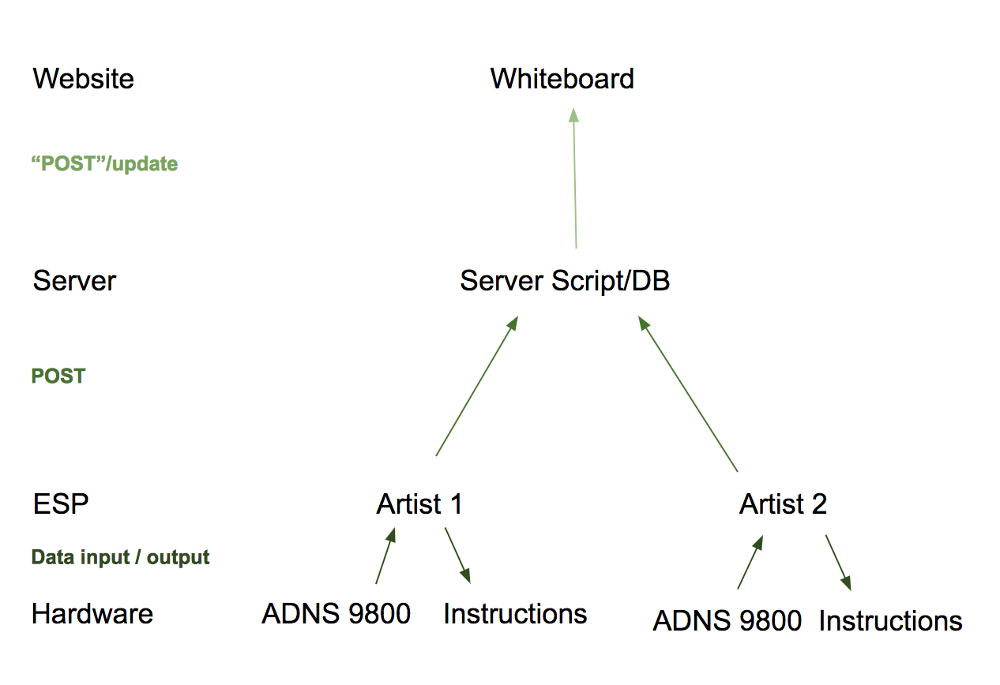
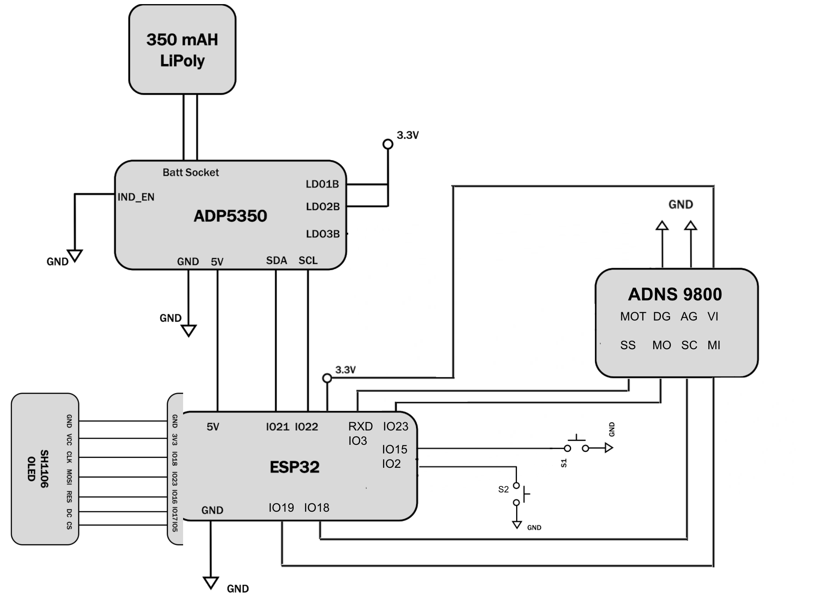
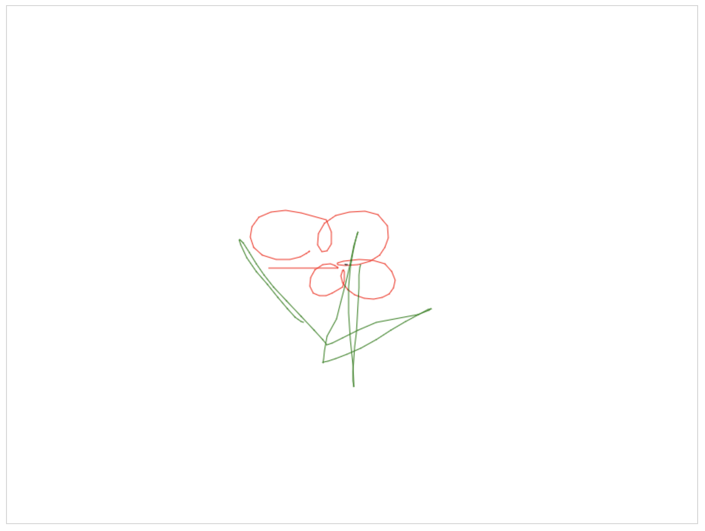
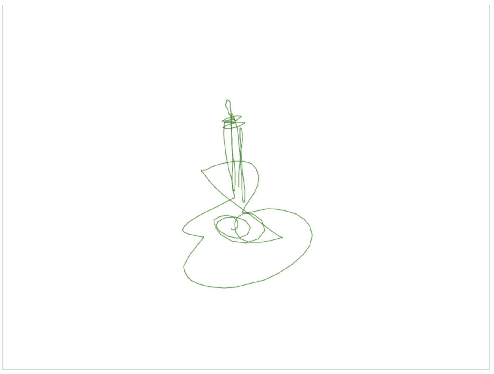
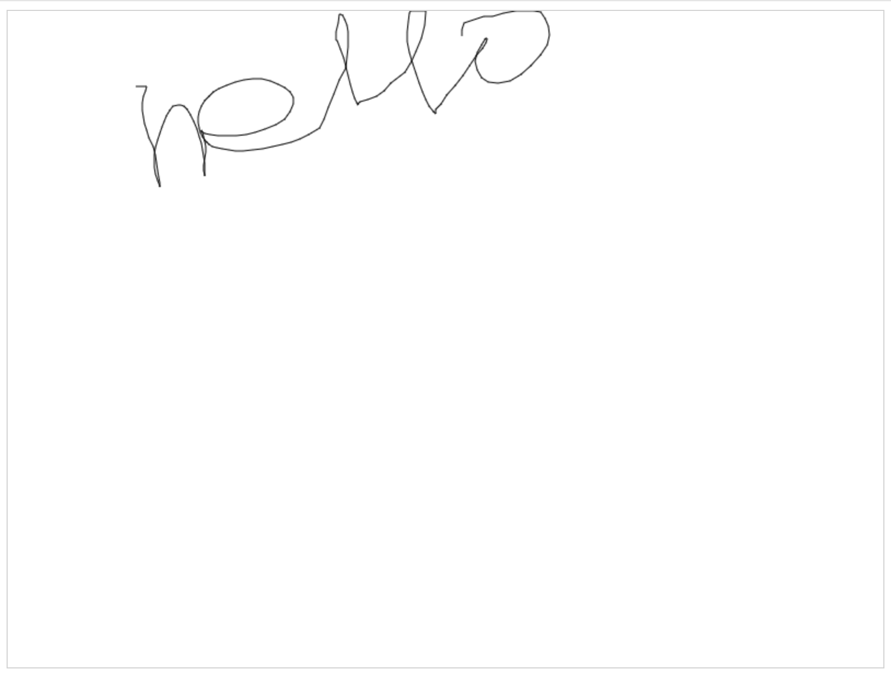
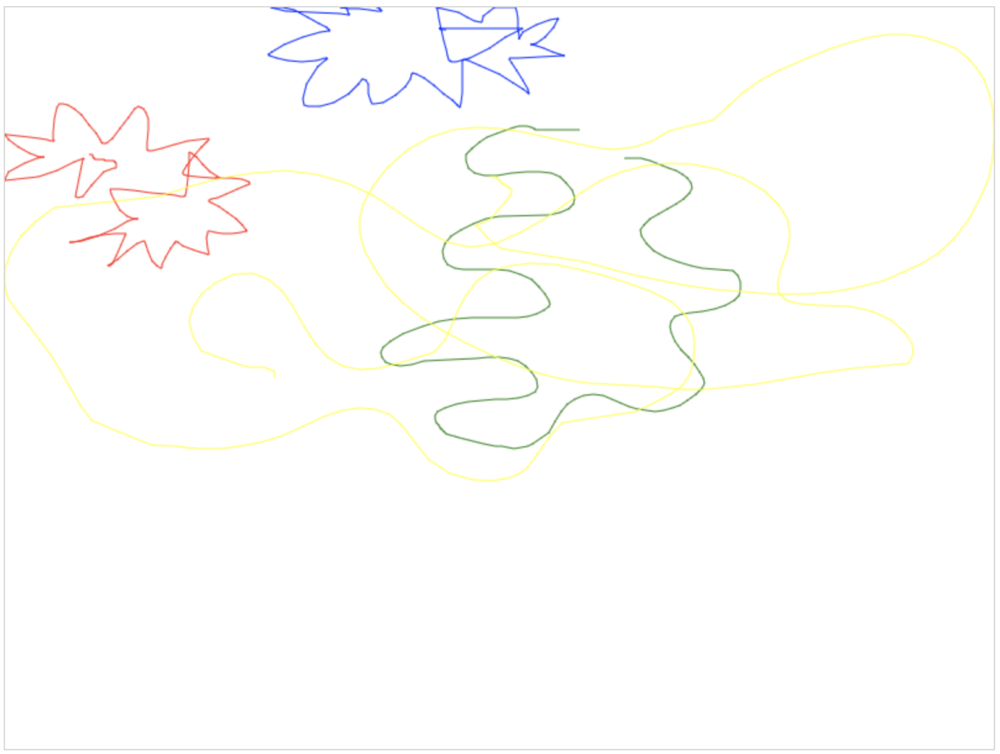

## Overview
The goal of this project is to provide a way for users to collaboratively draw online. Using a device, they can choose a color, "room" to draw in, and move a stylus to draw while the server is updated in real time, displaying their current progress (along with other contributors' work). We hoped to mimic the themes of Google Docs, where users can not only contribute their own work but also edit/delete other existing work; therefore aside from the ability to draw on top of other drawings as in a real-life canvas, we added a 'reset' feature where one user can erase another user's drawing (or his/her own) of a particular color.
## Design
Fucntional Block Diagram
<center>

</center>
####Software
Our main arduino file uses a state machine (see below) that, in summary, allows users to select a color and room (for example, choosing "green" and "img0" will correspond to drawing in green on the 0th image/"room"), begin drawing, draw by moving the stylus along a flat surface, and finish.
To make such selections (color, image #, start drawing, end drawing), there are two buttons that use an incorporated Button class. There is also a RESET function also controlled by a button click that erases the last thousand data points of drawing by a delete POST request.
On a high level, in the drawing state, data from the sensor is read by our motionValues class (giving displacement values), interpeted by our Motion class (giving scaled position values on canvas), and stored in an array via our ImageCoords class. The Artist class controls drawing aspects by storing the image and can view and change the image (add to or erase) or color. A list of renderable position values is received in the request handler in our server-side code, where they are added to a databased and the html is returned, updating the canvas every 5 seconds. The posting occurs in the loop. The DRAWING state sampling frequency is high enough for accurate drawings.
State Machine
<center>
<img src="./media/STATE MACHINE.jpg" width="1500"/>
</center>
####Hardware
The main functional component of our system is the ADNS-9800, a laser motion sensor. It is connected to the ESP, along with the two buttons, the ADP5350 battery management board, and the oled for displaying instructions. *to be continued.
Parts List:
We used one additional part (in a quantity of 4): the ADNS-9800, connected to the ESP by flexible wire.
Circuitry Schematic
<center>

</center>
####Power Management
Our system has a POWER_SAVE mode. If the user does not press any buttons for thirty seconds, the oled will go to sleep. The oled does not display any visuals while it is asleep and saves power. Another button press will make the oled display again. We also took out any components in our system that were not being used, so power would not be wasted going to those components. We also included a battery icon and the amount of time remaining, which is calculated based on the discharge rate. In one hour, the system in POWER_SAVE mode decreased from 3.76 volts to 3.42 volts. The battery voltage decreased by .34 volts. It was too inconvenient to turn off the Wi-fi in sleep states.
####Challenges
add stuff
## Results and Conclusions
Working System:
<center>
<video width="500" height="400" controls>
<source src="./media/working system.mp4" type="video/mp4" >
Your browser does not support the video tag.
</video>
</center>
Different Rooms: Different images (designated by image_id = img*"n"*) on which users can draw.
<center>

</center>
<center>

</center>
<center>

</center>
<center>

</center>
####Looking forward
Future improvements include quicker real-time updates to the server and higher sensor accuracy. Having the ability to see the cursor on-screen and lift stylus to move cursor location is another addition.
It would also be interesting to add a machine learning aspect: teaching to recognize drawings as certain images or words and translating them into text, for example.
##Documentation
####Hardware
An ADNS 9800 sensor is the working component used to obtain position values to be drawn online. Eight flexible wires are soldered onto the eight pins on the top of this circular sensor. It is connected to the ESP via the following pin connection guide:
MOT- not plugged in
SS- RXD- IO3
DG- GND
AG - GND
MO- IO23
SC- IO18
MI- IO19
VI- 3v3
The OLED, two buttons, and a power management board (ADP5350) are connected as well. See circuitry diagram above for details on all these connections, including another connection guide for the ADNS.
For testing purposes, battery and management board were excluded until final week of building.
####Software
Main .ino file:
Our main Arduino file makes use of several helper classes. See below for detailed documentation of each.
**motionValues:**
This class sets up the ADNS 9800 sensor and reads measurements from the sensors. This class can return the `delta_x` and `delta_y` displacement values from the sensor.
**Motion:**
`Motion` is initialized with a `starting_pos_x` and `starting_pos_y`: the starting x and starting y positions of the cursor on the canvas. When the class is instantiated, these variables are set to the center of the canvas, which is determined based off the width and height parameters in the constructor.
`disp_to_pos` takes in a displacement value (which is provided by `motionValues` in the main file) and a boolean `isX` (true if displacement is an x value, false if y value). It scales the displacement value depending on how sensitive we want motions of the stylus to translate in drawing, and, based on the starting position (local variable `starting_pos`, which is set to `starting_pos_x` or starting_pos_y depending on value of the boolean), converts the displacement value to an integer position value (integer for Javascript purposes). The code accounts for negative y displacements (moving stylus down) corresponding to moving downward on the canvas (increase in position). The code also updates `starting_pos_x` or `starting_pos_y` to the new position value returned by `disp_to_pos` for the next use of the function in the main sketch’s loop.
**ImageCoords:**
`ImageCoords` is initialized with an integer value `capacity` and stores the `capacity` most recent `x, y` points. Points can be added by calling `addToImage` and providing the desired `xVal` and `yVal` values.
`get1DCoords` returns the `numCoords` most recent data points for one dimension, specified by `isX` and sorted depending on the value of `isNewestFirst`, where `numCoords`, `isX`, and `isNewestFirst` are all user defined.
`resetImage` will effectively remove all the current saved points.
**Artist:**
An `Artist` draws on a canvas named `canvasID` with one color at a time, denoted by `color`. The `Artist` saves only the most recent `imageSize` points. An `Artist` can view and change the image or color using `getCurrentImage` and `changeCurrentImage` or `getCurrentColor` and `changeCurrentColor` respectively.
The `numPoints` most recent points in one dimension - denoted by `isX` - can be retrieved as a string with points sorted oldest to newest.
`addToImage` will add provided `x` and `y` values to the `Artist`’s current image.
`clearPoints` will effectively remove all the current saved points.
**Server:**
`server.py`:
`request_handler` : Requires that the a valid image ID is included in all requests. `request_handler` will always display the image associated with the valid image ID regardless of what the request is.
The format of what `request` must be is specified below:
'entry_id'
Required for everything - viewing (GET), posting, and deleting. String representing name of the image. This image will be the one displayed / drawn on / deleted from
'color'
OPTIONAL for all requests. Will default to black if not provided.
`x_coords`
Required for posting. string of x values separated by commas with a trailing comma. Values must be ordered from oldest to newest
`y_coords`
'cmd'
Required for deleting. values should be `DELETE`
'num_entries'
Required for deleting. Value should be integer. will delete all `num_entries` from the db
**Button:**
The `Button` class will read from user specified `pin` and cycle between `numstates` number of states.
`getState` will return the button’s current state as an integer from [0, `numstates`)
State machine loop in main code, using helper classes and managing power consumption:
```
switch (state) {
// CHOOSE COLOR USING BUTTON 2
case CHOOSE_COLOR:
print_instructions("Select Color: " + colors[color_index]);
// If nothing happens for 30 seconds, go into power save mode
if (millis() - powerTimer >= 30000) {
oled.setPowerSave(1);
old_state = CHOOSE_COLOR;
state = POWER_SAVE;
}
// Use button 2 to cycle through available colors
if (lastB2 != b2.getState()) {
lastB2 = b2.getState();
powerTimer = millis();
color_index = (color_index + 1) % 5;
}
// Use button 1 to select color
if (lastB1 != b1.getState()) {
lastB1 = b1.getState();
artist.changeCurrentColor(colors[color_index]);
powerTimer = millis();
state = CHOOSE_IMG;
}
break;
// CHOOSE IMG NUMBER USING BUTTON 2
case CHOOSE_IMG:
imageId = "img" + String(idSeq);
print_instructions("Select: " + imageId);
// If nothing happens for 30 seconds, go into power save mode
if (millis() - powerTimer >= 30000) {
oled.setPowerSave(1);
old_state = CHOOSE_IMG;
state = POWER_SAVE;
}
// Use button 2 to increase img number
if (lastB2 != b2.getState()) {
lastB2 = b2.getState();
powerTimer = millis();
idSeq += 1;
}
// Use button 1 to select image
if (lastB1 != b1.getState()) {
lastB1 = b1.getState();
artist.clearPoints();
artist.changeCurrentImage(imageId);
powerTimer = millis();
state = INSTRUCTIONS;
}
break;
// PRINT INSTRUCTIONS AND BE READY TO START DRAWING
case INSTRUCTIONS:
print_instructions("press b1 to draw then b1 again to stop");
// If nothing happens for 30 seconds, go into power save mode
if (millis() - powerTimer >= 30000) {
oled.setPowerSave(1);
old_state = INSTRUCTIONS;
state = POWER_SAVE;
}
// Use button 1 to start drawing
if (lastB1 != b1.getState()) {
lastB1 = b1.getState();
powerTimer = millis();
state = DRAW;
}
break;
// CONTINUOUSLY SAMPLE INPUTS FROM SENSOR AND POST TO SERVER
case DRAW:
print_instructions("I'm drawing on '" + imageId + "'. Press b1 again to stop");
if (millis() - lastSampleTime >= sampleFrequency) {
lastSampleTime = millis();
numSavedPoints += 1;
delay(20);
float x = mv.motionVals_x();
delay(20);
float y = -1*mv.motionVals_y();
Serial.println(x);
Serial.println(y);
artist.addToImage(motionScaling.disp_to_pos(x, true), (motionScaling.disp_to_pos(y, false)));
globalCounter++;
}
// ImageCoords is full, time to post.
if (numSavedPoints == pointsToSave) {
POST_request(artist.getCurrentImage(), artist.getMostRecentPoints(numSavedPoints, true), artist.getMostRecentPoints(numSavedPoints, false), artist.getCurrentColor());//img.get1DCoords(numSavedPoints, true, false), img.get1DCoords(numSavedPoints, false, false), kerberos);
numSavedPoints = 0;
}
// Use button 2 to send DELETE_request
if (lastB2 != b2.getState()) {
lastB2 = b2.getState();
DELETE_request(artist.getCurrentImage(), "1000", artist.getCurrentColor());
print_instructions("RESET");
delay(3000);
powerTimer = millis();
state = INSTRUCTIONS;
}
// Use button 1 to finish drawing
if (lastB1 != b1.getState()) {
lastB1 = b1.getState();
// Do a final POST_request
POST_request(artist.getCurrentImage(), artist.getMostRecentPoints(numSavedPoints, true), artist.getMostRecentPoints(numSavedPoints, false), artist.getCurrentColor());//img.get1DCoords(numSavedPoints, true, false), img.get1DCoords(numSavedPoints, false, false), kerberos);
artist.clearPoints();
numSavedPoints = 0;
powerTimer = millis();
state = POST_DRAW_INSTRUCTIONS;
}
break;
case POST_DRAW_INSTRUCTIONS:
print_instructions("Everything is posted! Press b1 to finish");
// Use button 1 to get back to choose color state
if (lastB1 != b1.getState()) {
lastB1 = b1.getState();
powerTimer = millis();
state = CHOOSE_COLOR;
}
break;
case POWER_SAVE:
// Use either button 1 or 2 to turn oled back on and return to previous state
if (lastB1 != b1.getState() || lastB2 != b2.getState()) {
lastB1 = b1.getState();
lastB2 = b2.getState();
oled.begin();
powerTimer = millis();
state = old_state;
}
break;
}
```